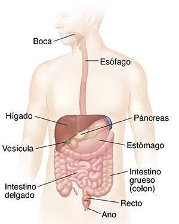

Sistema digestivo
Nota
El sistema digestivo abarca una gran cantidad de órganos, por lo que ocupará gran parte del curso.

Os dejo el siguiente vídeo con una de las patologías que veremos en este tema.
Teoría
En breves subiré la siguiente información.
Práctica
En breves subiré la siguiente información.